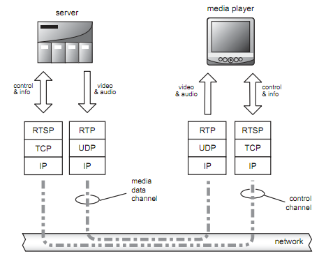

<!DOCTYPE html>

<!-- Mirrored from www.bogotobogo.com/VideoStreaming/videostreaming_etc.php by HTTrack Website Copier/3.x [XR&CO'2014], Sun, 10 Dec 2017 12:52:59 GMT -->
<head>
  <title>Video Streaming - etc. - 2017</title>
  <meta content="Video Streaming" name="description" />
  <meta content="Codecs, DirectShow, containers,sdp, Streaming, RTP, RTCP, RTSP, SDP, Video Streaming vs. Progressive Download, CDN (Content Delivery Network), broadcast vs multicast, Video Streaming Servers, K-Lite_Codec_Pack" name="keywords" />
  <meta name="viewport" content="width=device-width, initial-scale=1">

  <link href="http://netdna.bootstrapcdn.com/bootstrap/3.0.0/css/bootstrap.no-icons.min.css" rel="stylesheet">
  <link href="http://netdna.bootstrapcdn.com/font-awesome/4.0.3/css/font-awesome.css" rel="stylesheet">
  <link rel="stylesheet" href="http://fonts.googleapis.com/css?family=Alice|Open+Sans:400,300,700">
  <link rel="stylesheet" href="../public/css/app.css">
  <link rel="stylesheet" href="../public/css/styles.css">
  <link rel="stylesheet" href="../public/css/bogostyleWidePreNew.css">
</head>

<body class="home">
    <nav class="navbar navbar-default navbar-fixed-top">
    <div class="container-fluid">      
      <div class="navbar-header">
        <!--<button type="button" class="navbar-toggle collapsed" data-toggle="collapse" data-target="#navbar" aria-expanded="false" aria-controls="navbar"> -->
        <button type="button" class="navbar-toggle collapsed" data-toggle="collapse" data-target=".navbar-collapse" aria-expanded="false" aria-controls="navbar"> 
          <span class="sr-only">Toggle navigation</span> 
          <span class="icon-bar"></span> 
          <span class="icon-bar"></span> 
          <span class="icon-bar"></span> 
        </button>
        <a class="navbar-brand" href="../index-2.html">BogoToBogo</a>
      </div>
      
      <div class="navbar-collapse collapse">
        
        <ul class="nav navbar-nav">
          <li class="active"><a href="../index-2.html">Home</a></li>
          <li><a href="../about_us.html">About</a></li>
          <li><a href="../Hadoop/BigData_hadoop_Install_on_ubuntu_single_node_cluster.html">Big Data</a></li>
          <li><a href="../python/scikit-learn/Artificial-Neural-Network-ANN-1-Introduction.html">Machine Learning</a></li>
          <li><a href="../AngularJS/AngularJS_Introduction.html">AngularJS</a></li> 
          <li><a href="../python/pytut.html">Python</a></li>
          <li><a href="../cplusplus/cpptut.html">C++</a></li>
          <li><a href="../DevOps/DevOps_Jenkins_Chef_Puppet_Graphite_Logstash.html">DevOps </a></li>
          <li><a href="../Algorithms/algorithms.html">Algorithms</a></li> 
          <li class="dropdown">
            <a href="#" class="dropdown-toggle" data-toggle="dropdown">More...<b class="caret"></b></a>
            <ul class="dropdown-menu">
           
              <li><a href="../Qt/Qt5_Creating_QtQuick2_QML_Application_Animation_A.html">Qt 5</a></li>                           
              <li><a href="../Android/android.html">Android</a></li>
              
              <li><a href="../Linux/linux_tips1.html">Linux</a></li>
              <li><a href="../Java/tutorials/on_java.html">Java</a></li>
              <li><a href="../CSharp/.netframework.html">CSharp</a></li>
              <li><a href="videostreaming_etc.html">Video Streaming</a></li>
              <li><a href="../FFMpeg/ffmpeg_fade_in_fade_out_transitions_effects_filters_slideshow_concat.html">FFmpeg</a></li>
              <li><a href="../Matlab/Matlab_Tutorial_Manipulating_Audio_I_Reverse_Delay_Tone_Control_Changing_Speed_Removing_Vocals.html">Matlab</a></li>
              <li><a href="../python/Django/Python_Django_Forums_Shared_Host.html">Django 1.8</a></li>
              <li><a href="../Laravel5/Laravel5_ToDo_List_Sample.html">Laravel 5.2</a></li>
              <li><a href="../RubyOnRails/RubyOnRails.html">Ruby On Rails</a></li>
              <li><a href="../HTML5/HTML5_Tutorial.html">HTML5 & CSS</a></li>
              <li><a href="../AmazingPlaces/index.html" target="_blank">
Earth</a> </li>
            </ul>
          </li>
        </ul>      
      </div>
    </div>  
  </nav>  

  <div id="main">
    <div class="container">
      <div class="row section featured topspace">
        <div class="row">
          <div class="col-sm-9 col-md-9 col-xs-9">
            <h2 class="section-title">Video Streaming - Etc. 2016   
    <g:plusone></g:plusone></h2>
            <div class="icon-image">
               
            </div>
            <div class="SocialLinks">
  <span class='st__large' displayText=''></span>
  <br><br>
  <div align="center">
  <span class='st_facebook_large' displayText='Facebook'></span>
  <span class='st_twitter_large' displayText='Tweet'></span>
  <span class='st_linkedin_large' displayText='LinkedIn'></span>
  </div>
  <br><br>
  <script type="text/javascript" src="http://w.sharethis.com/button/buttons.js"></script>
  <script type="text/javascript">stLight.options({publisher: "b9569c43-5f56-4501-92f0-4bf4aa8fceb0", doNotHash: false, doNotCopy: true, hashAddressBar: false});</script>
</div>

<div id="bookmarkshare">
  <script type="text/javascript">var addthis_config = {"data_track_clickback":true};</script>
  <a class="addthis_button" href="http://www.addthis.com/bookmark.php?v=250&amp;username=khhong7"></a>
  <script type="text/javascript" src="http://s7.addthis.com/js/250/addthis_widget.js#username=khhong7"></script>
</div>

<br>
<hr>
<br>


<!-- Google bogo1 ad -->
<!-- Google search box -->


<!-- bogo1 -->
<div>
  <script async src="http://pagead2.googlesyndication.com/pagead/js/adsbygoogle.js"></script>
  <!-- bogo1 -->
  <ins class="adsbygoogle"
     style="display:inline-block;width:728px;height:90px"
     data-ad-client="ca-pub-4716428189734495"
     data-ad-slot="6542308167"></ins>
  <script>
   (adsbygoogle = window.adsbygoogle || []).push({});
  </script>
</div>


<!-- Google search box -->
<div class="AdSenseSearch">
  bogotobogo.com site search:
  <form action="http://www.google.com/" id="cse-search-box" target="_blank">
    <div>
      <input type="hidden" name="cx" value="partner-pub-4716428189734495:1794050961" />
      <input type="hidden" name="ie" value="UTF-8" />
      <!--<input type="text" name="q" size="55" />-->
      <input type="text" name="q" size="" width="90%"/>
      <input type="submit" name="sa" value="Search" />
    </div>
  </form>
  <script type="text/javascript" src="http://www.google.com/coop/cse/brand?form=cse-search-box&amp;lang=en"></script>
</div>


<hr>
            <br><br><br>
<br/><br/>
<div class="subtitle" id="terminology">Video Streaming - Terminology</div>
<ol>
<li><strong>Encode</strong><br/>
To convert raw audio and/or video content into compressed form using technologies such as MPEG.
</li>
<li><strong>Transcode</strong><br/>
To convert a video signal that is encoded in one technology (MPEG-2) into another (MPEG-4).
</li>
<li><strong>Transrate</strong><br/>
To change the bit rate of compressed video stream.
</li>
<li><strong>Transmux</strong><br/>
To convert to a different container format without changing the file contents.
</li>
<li><strong>Pull</strong><br/>
A Pull is a connection initiated by a streaming server to 
receive a broadcast from a designated encoder for re-distribution 
across a network.
</li>
<li><strong>Push</strong><br/>
A Push is a connection initiated by an encoder to a 
streaming server to receive a broadcast for re-distribution across a 
network. This requires a username and password.
</li>
<li><strong>Latency</strong><br/>
Latency refers to the amount of time taken for data to 
complete a return trip between two points.
</li>
<li><strong>ABR</strong><br/>
Adaptive BitRate Video Streaming, the protocol developed 
by apple and used for iOS (and many products)
</li>
<li><strong>RTMP</strong><br/>Real Time Media Protocol, developed by Adobe used by 
Flash
</li>
<li><strong>CBR (Constant Bit Rate) encoding</strong><br/>
The encoding software attempt to keep the total bits/second constant 
through the entire video. This makes the size of the file predictable and 
easier to stream. Most modern CODECs will allow you to set an upper 
threshold on the bit rate and allow the rate to drop when it is not 
required for quality to help reduce the amount of bandwidth used.
</li>
<li><strong>Variable bit rate encoding (VBR)</strong><br/>
A method of encoding video that first analyses the video and then 
compresses it. While it can take up to twice as long to encode the video, 
they are compressed at an optimal rate for the smallest file size. The 
variability in the data rate of the data stream does not make it 
appropriate for RTSP streamed content, but good for progressive 
download or video on CDs or other physical media.
</li>
</ol>
<br/>

<!-- Google bogo_square_ad -->
<div>
  <script type="text/javascript">
    google_ad_client = "ca-pub-4716428189734495";
    /* bogo_LargeRectangle_336_280 */
    google_ad_slot = "2712696561";
    google_ad_width = 336;
    google_ad_height = 280;
  </script>
  <script type="text/javascript"
    src="http://pagead2.googlesyndication.com/pagead/show_ads.js">
  </script>
</div>
<br>


<br/>
<br/>
<div class="subtitle" id="streaming">Video Streaming - Streaming vs. Download</div>
<p>We have two ways to view media on the internet: <strong>Downloading</strong> and <strong>Streaming</strong>. In this section, I'll briefly summarize each, and then later, address them more deeply.</p>
<br/>

<br/>
<ol>
<li><strong>Downloading</strong><br/>
<p>
When we download a file, the entire file is saved on our computer. This has some advantages (such as quicker access to different parts of the file) but has the big disadvantage of having to wait for the whole file to download before any of it can be viewed.</p>
<p>
The easiest way to provide downloadable video files is to use a simple hyperlink to the file. A slightly more advanced method is to embed the file in a web page using special HTML code.</p>
<p>
Delivering video files this way is known as HTTP streaming or HTTP delivery. For this reason it is easy to set up and use on almost any website, without requiring additional software or special hosting plans.</p>
</li>
<li>
<strong>Streaming</strong>
<p>
Streaming media works differently - the end user can start watching the file almost as soon as it begins downloading. In effect, the file is sent to the user in a constant stream, and the user watches it as it arrives. The obvious advantage with this method is no waiting. Streaming media has additional advantages such as being able to broadcast live events such as a webcast or netcast.</p>
<p>
True streaming video must be delivered from a specialized streaming server.</p>
</li>
<li>
<strong>Progressive Downloading</strong>
<p>
There is also a hybrid method known as progressive download. In this method the video clip is downloaded but begins playing as soon as a portion of the file has been received. This simulates true streaming, but doesn't have all the advantages.</p>
</li>
</ol>
<br/>
<p>Most end users cannot tell the difference between the video delivered by <strong>progressive download</strong> and that delivered via a <strong>streaming video server</strong>. They are all streams after all. It is not until we look very carefully at video player functions like how the navigation actually works (rewind and fast forward), that there is a difference.</p>
<br/>
<p>The <strong>progressive download</strong> method is using a <strong>standard web server</strong> to transmit the file. The <strong>streaming</strong> method is using a <a href="#streamingservers">streaming media server</a>.
<p>Streaming means that when a viewer clicks the button on a website, the video starts playing immediately, and it continues to play more or less smoothly to the end. To make this happen, the data rate of the encoded file must be smaller than the bandwidth capacity of the remote viewer; otherwise, the video will frequently stop playing.</p>
<p> The technical definition of <strong>streaming video</strong> is video delivered via a streaming server, which is a software program that's dedicated to deliver streaming media. This is in contrast with a traditional web server. The <strong>streaming server</strong> has several
additional functions over a standard web server:</p>
<ol>
<li> Real-time flow control</li>
<li> Intelligent stream switching</li>
<li>Interactive clip navigation</li>
</ol>
<p>In <strong>progressive download</strong>, the end user experience is similar to streaming media, however the digital file is downloaded to a physical drive on the end user's device, the digital file is typically stored in the temp folder of the associated web browser if the digital media was embedded into a web page or is diverted to a storage directory that is set in the preferences of the media player used for playback. The digital media file will stutter or stop play back if the rate of play back exceeds the rate at which the file is downloaded. The file will begin to play again after further download.</p>
<p>In <strong>streaming</strong>, a streaming server works with the client to send audio and/or video over the Internet or Intranet and play it almost immediately. They allow real-time 'broadcasting' of live events, and the ability to control the play-back of on-demand content. Playback begins as soon as sufficient data has downloaded. The viewer can skip to a point part way through a clip without needing to download the beginning. If the data can not be downloaded fast enough, a streamed web cast sacrifices quality in order for the viewing to remain synchronised with the original timing of the content.</p>
<br/><br/>

<br/><br/>
<p>One of the primary reasons that producers use streaming servers is because once video is stored (or cached) on a hard drive, it's very easy to copy. Streaming video can be cache-less, which makes it inherently more secure.</p>
<p>Most Internet Video is delivered by <strong>progressive download</strong>. For example, YouTube video is delivered by progressive download.</p>
<p>What's happening when we watch a movie from a web site? First, the video file is placed on a server. Second, we click a link to that file on a web page. The server sends the data to us. It may appear to be streaming since playback can begin almost immediately. The progressive download feature in most media players allows them to begin playing the file as soon as enough data has been downloaded.</p>
<p>Years ago, the only acceptable way to deliver video was via streaming protocols such as RTSP, RTP, or RTCP that required proprietary players and expensive servers. Often referred to as Streaming Video, these solutions were costly and did not scale well but offered more functionality at the time. Yet, as technology has evolved, there was a wholesale migration towards to a new way of delivering video delivery via the standard HTTP protocol (often referred to as Progressive Download). Less expensive, it also scales well. This shift has occurred due to customer acceptance once the technology evolved to include many of the features that were once only possible with streaming protocols.</p>
<p>By using <strong>metadata</strong> attached to encoded files, <strong>progressive download</strong> can now allow users full seek and navigation at any time without requiring full file download. By using <strong>bandwidth throttling</strong> (specify bit rate that files should be delivered at), it is now possible to deliver only the amount of video that will be viewed, preventing wasted bandwidth. For more on Bandwidth Optimization, check <a href="optimization_transrating.html" target="_blank">here</a>.<p>
<p>To maximize security, no-cache headers can be used to prevent browsers from storing content in cache and further DRM protection is easily available from partners.</p>
<p>So, with the broader availability of high-bandwidth networks and new media delivery features of web server, the differences that previously favored the use of a stream server over a web server for delivering digital media content have blurred. In non-multicast streaming scenarios, depending upon your business need, a stream server or a web server can both be viable options for digital media content delivery today.</p>
<p>However, in many ways it is inferior to adaptive streaming - <strong>Http Live Streaming (HLS)</strong> which will be described later. </p>
<br/>

<br/><br/><br/>
<p>
Progressive download can be achieved using a regular web (http) server. The client (player) handles the buffering and playing during the download process. </p>
</p>
<p>The quality of the file from the progressive download is pre-determined.  
A user watching from a mobile connection on a 3 inch screen will have the same video as a user watching from a cable modem connection on a 1080p TV. 
The player is unable to dynamically adjust based on the user's network and screen conditions. 
Furthermore, if a user starts in a high-bandwidth environment, then moves to a low-bandwidth environment, 
HTTP Progressive Download is completely unable to keep pace. HLS, however, handles this scenario gracefully with minimal rebuffering and lag.
</p>
<br/>
<p>Video Streaming Primer<br/>
<a href="Files/Video_streaming_etc/Video%20Streaming%201.12.pdf" target="_blank">Video Streaming 1.12.pdf</a> <br/></p>
<br/>

<br/><br/><br/>
<p><strong>HLS</strong> is another HTTP-based media streaming communications protocol implemented by Apple Inc. as part of their QuickTime and iPhone software systems. There are multiple adaptive streaming alternatives today, including <strong>Adobe's Dynamic Streaming</strong>, <strong>Apple's HTTP Live Streaming</strong> and <strong>Microsoft's Smooth Streaming</strong>. For more info, check <a href="http://mashable.com/2011/01/25/adaptive-bit-rate-video-streaming/" target="_blank"> Adaptive Bit Rate Video Streaming: Why Delivery Will Matter More Than Codec</a>.</p>
<p> HLS was originally unveiled with the introduction of the iPhone 3.0 in 2009. Prior to the iPhone 3, no streaming protocols were supported natively on the iPhone. What it's doing is an adaptive streaming over HTTP.
The server is usually running streaming media software such as <strong>Windows Media Services (Microsoft)</strong> or the <strong>Helix Server (RealNetworks)</strong>.</p>
<p>Adaptive streaming segments video into small chunks. For example HLS usually uses 10 second chunks. The video is encoded at multiple bitrates and resolutions creating chunks of different sizes. This is the <strong>adaptive</strong> part of adaptive streaming, as the mobile client can choose between different bitrates/resolutions and adapt to larger or smaller chunks automatically as network conditions change.</p>
<p>HTTP Live Streaming lets you send audio and video over HTTP from an ordinary web server for playback on iPhone, iPad, iPod touch, and desktop computers. HTTP Live Streaming supports both live broadcasts and prerecorded content (video on demand). HTTP Live Streaming supports multiple alternate streams at different bit rates, and the client software can switch streams intelligently as network bandwidth changes. HTTP Live Streaming also provides for media encryption and user authentication over HTTPS, allowing publishers to protect their work.
</p>
<p>By default both of the methods use protocols more suited to streaming, such as <strong>RTSP (Real Time Streaming Protocol)</strong> 
and <strong>UDP (User Datagram Protocol)</strong>. RTSP provides built-in support for the control messages and other features of streaming servers.</p>
<p>With <strong>progressive download</strong>, if the playback rate exceeds the download rate, playback is delayed until more data is downloaded. Files that are downloaded over the Web are generally only able to be viewed after the entire file is downloaded. </p>
<p>But with <strong>HLS</strong>, files delivered to the server using streaming media technology are playable at the same time they are received by the computer they are being played on. A streaming server works with the client to send audio and/or video over the Internet and play it almost immediately. </p>
<br/>
<br/>

<br/>
<br/>

<br/>
<br/>
<p>Picture from <a href="http://developer.apple.com/library/ios/#documentation/NetworkingInternet/Conceptual/StreamingMediaGuide/HTTPStreamingArchitecture/HTTPStreamingArchitecture.html#//apple_ref/doc/uid/TP40008332-CH101-SW2" target="_blank">Apple, application/x-mpegURL .m3u8 and video/MP2T .ts</a>
</p>
<br/>
<br/>
<p>Streaming has the following steps:</p>
<ol>
<li>The <strong>audio</strong> stream is compressed using an audio codec (<strong>MP3</strong>, <strong>Vorbis</strong> or <strong>AAC</strong>).
</li>
<li>The <strong>video</strong> stream is compressed using a video codec (<strong>H.264</strong> or <strong>V8</strong>).
</li>
<li>Encoded audio and video streams are <strong>assembled</strong> in a <strong>container</strong> bitstream (<strong>FLV</strong>, <strong>WebM</strong>, 
<strong>ASF</strong> or <strong>ISMA</strong>).
</li>
<li>The bitstream is delivered from a <strong>streaming server</strong> to a <strong>streaming client</strong> using a transport protocol (<strong>MMS</strong> 
or <strong>RTP</strong>).
</li>
<li>The streaming client may <strong>interact</strong> with the streaming server using a <strong>control</strong> protocol (<strong>MMS</strong> or <strong>RTSP</strong>).
</li>
</ol>
<br/>
<div class="subtitle" id="rtp">RTP (Real Time Protocol)</div>
<p><strong>Real-Time Protocol (RTP)</strong> is a transport protocol that was developed for streaming data. RTP includes extra data fields not present in TCP. It provides a <strong>timestamp</strong> and <strong>sequence number</strong> to facilitate the data transport timing, and allows
control of the media server so that the video stream is served at the correct
rate for real-time display. The media player then uses these RTP fields to
assemble the received packets into the correct order and playback rate.</p>
<ol>
<li><strong>Sequence number</strong><br/>
 The value of this 16-bit number increments by one for each
packet. It is used by the player to detect packet loss and then to sequence the
packets in the correct order. The initial number for a stream session is chosen
at random.</li>
<li><strong>Timestamp</strong><br/>
 This is a sampling instance derived from a reference clock to allow
for synchronization and jitter calculations. It is monotonic and linear in time.</li>
<li><strong>Source identfiers</strong><br/>
CSRC is a unique identifier for the synchronization of the
RTP stream. One or more CSRCs exist when the RTP stream is carrying information for multiple media sources. This could be the case for a video mix
between two sources or for embedded content.</li>
</ol>
<p>In a sense, RTP is not a <strong>true</strong> transport protocol, and it is designed to use UDP as a packet transport mechanism. In other words, RTP usually runs on UDP, and uses its multiplexing and checksum features.
Note that RTP does not provide any control of the quality of service or reservation of network resources.</p>
<br/>

<br/>
<br/>
<br/>
<br/><br/>
<div class="subtitle" id="rtcp">RTCP (Real Time Control Protocol)</div>
<p><strong>RTCP</strong> is used in conjunction with RTP. In other words, whenever an RTP connection is made, an RTCP connection also needs to be made. This connection is made using a second neighboring UDP port; if the RTP connection uses port 1500, then the RTCP connection uses port 1501. </p>
<p>RTCP gives feedback to each participant in an RTP session that can be used to control the session. 
The messages includes
reception reports, including number of packets lost and jitter statistics (early or
late arrivals). This information potentially can be used by higher layer applications to modify the transmission. For example, the bit rate of a stream could be changed to counter network congestion. Some RTCP messages relate to 
control of a video conference with multiple participants.</p>
<p>RTCP provides the following features:</p>
<ol>
<li> Allow synchronization between different media types, such as video and audio. It has timestamp that is used by the receiver to align the clocks in each different RTP stream so that video and audio signals can be synced.
 </li>
<li> Report reception quality to the senders. </li>
<li> Provide identification of the senders in the RTP session so that new receivers can join and figure out which streams they need to obtain in order to participate fully.
 </li>
</ol>
<br/>
<br/>
<br/><br/>
<div class="subtitle" id="sdp">Session Description Protocol (SDP)</div>
<p><strong>SDP</strong> is a media description format intended for describing multimedia sessions,
including video-conferencing. It includes session announcement and session
invitation. Below is a sample of SDP.</p>
<pre>
v=0
o=- 32176 32176 IN IP4 13.16.32.209
s=ONetworkRenderer
i=OLiveBroadcast
c=IN IP4 221.1.0.1
t=0 0
b=AS:32
a=x-qt-text-nam:ONetwork Renderer
a=x-qt-text-inf:OLive Broadcast
a=x-qt-text-cmt:source application:ONetwork Renderer
a=x-qt-text-aut:
a=x-qt-text-cpy:
a=range:npt=0-
m=audio 22002 RTP/AVP 96
a=rtpmap:96 MP4A-LATM/44100/1
a=fmtp:96 cpresent=0;config=400024100000
a=control:trackID=1
</pre>
<p>The description of the <strong>sdp</strong> is shown below:</p>
<pre>
v: Version
o: Originator, session identifier, version, network type, protocol type, address
s: Subject
i: Information
c: Connection type, address
t: Start and stop times
m: Media type, port number, transport protocol, RTP profile
a: Dynamic payload type description
</pre>
<p>When we changed something in the <strong>sdp</strong>, the client should start a new session to see the effect of the changes. It works the same way as the html file. The web server holds the new html pages, and a client needs to refresh the the page to see any changes made.</p>
<br/>
<br/>
<br/><br/>
<div class="subtitle" id="rtsp">RTSP (Real Time Streaming Protocol)</div>
<p>RTSP provides a means for users to control media sessions. RTSP does not actually provide for the transport of video signals but it allows these signals to be controlled by a user. The <strong>RTSP (Real Time Streaming Protocol)</strong> is a network control protocol to control streaming media servers. The protocol is used for establishing and controlling media sessions between the the streaming server and client. <strong>RTSP</strong> is considered more of a framework than a protocol. RTSP is designed to work on top of <strong>RTP</strong> to both control and deliver real-time content.</p>
<br/>

<br/>
<br/>

<br/>
<p>
RTSP is one of the number of different protocols have been developed to facilitate real-time
streaming of multimedia content. Streaming means that the mean frame rate of
the video viewed at the player is dictated by the transmitted frame rate. The
delivery rate has to be controlled so that the video data arrives just before it is
required for display on the player. The associated audio track or tracks must
also remain synchronized to the video. IP data transmission is not a synchronous process and delivery is by best effort. To achieve synchronism, timing 
references have to be embedded in the stream.</p>
<br/>

<br/>
<p>It delivers content as a unicast stream. 
It is an application-level protocol that was created specifically to control the delivery of real-time data, 
such as audio and video content. It is implemented over a correction-oriented transport protocol. 
It supports player control actions such as stopping, pausing, rewinding, 
and fast-forwarding.</p>
<p>If the connection URL uses RTSP, RTSP automatically negotiates the best delivery mechanism for the content. 
It then directs the RTP protocol to deliver streaming content using UDP, 
or using a TCP-based protocol on a network that does not support UDP.</p>
<p>The default transport layer port number is 554. 
<br/>

<br/>
<ol>
<li><strong>OPTIONS</strong>
<p>
An OPTIONS request returns the request types the server will accept.
<li><strong>DESCRIBE</strong>
<p>A DESCRIBE request includes an RTSP URL (rtsp://...), and the type of reply data that can be handled. The default port for the RTSP protocol is 554 for both UDP and TCP transports. This reply includes the presentation description, typically in <strong>Session Description Protocol (SDP)</strong> format. Among other things, the presentation description lists the media streams controlled with the aggregate URL. In the typical case, there is one media stream each for audio and video.
</p>
</li>
<li><strong>SETUP</strong>
<p>A SETUP request specifies how a single media stream must be transported. This must be done before a PLAY request is sent. The request contains the media stream URL and a transport specifier. This specifier typically includes a local port for receiving RTP data (audio or video), and another for RTCP data (meta information). The server reply usually confirms the chosen parameters, and fills in the missing parts, such as the server's chosen ports. Each media stream must be configured using SETUP before an aggregate play request may be sent.
</p>
</li>
<li><strong>PLAY</strong>
<p>A PLAY request will cause one or all media streams to be played. Play requests can be stacked by sending multiple PLAY requests. The URL may be the aggregate URL (to play all media streams), or a single media stream URL (to play only that stream). A range can be specified. If no range is specified, the stream is played from the beginning and plays to the end, or, if the stream is paused, it is resumed at the point it was paused.
</p>
</li>
<li><strong>PAUSE</strong>
<p>A PAUSE request temporarily halts one or all media streams, so it can later be resumed with a PLAY request. The request contains an aggregate or media stream URL. A range parameter on a PAUSE request specifies when to pause. When the range parameter is omitted, the pause occurs immediately and indefinitely.
</p>
</li>
<li><strong>RECORD</strong>
<p>The RECORD request can be used to send a stream to the server for storage.
</p>
</li>
<li><strong>TEARDOWN</strong>
<p>A TEARDOWN request is used to terminate the session. It stops all media streams and frees all session related data on the server.
</p>
</li>
</p></li></ol>
<p>A streaming server works with the client to send audio and/or video over the Internet or Intranet and play it almost immediately. They allow real-time 'broadcasting' of live events, and the ability to control the play-back of on-demand content. Playback begins as soon as sufficient data has downloaded. The viewer can skip to a point part way through a clip without needing to download the beginning. If the data can not be downloaded fast enough, a streamed web cast sacrifices quality in order for the viewing to remain synchronised with the original timing of the content.</p>
<p>With <a href="http://msdn.microsoft.com/en-us/library/bb905764.aspx" target="_blank">Windows Media Server</a>, RTSP supports the following features:</p>
<ol>
<li>RTP packets can stream over UDP or over TCP. If the client can tolerate packet loss, streaming over UDP can be more efficient than TCP because UDP does not incur the overhead of retransmitting lost packets.</li>
<li>The encapsulation of Advanced Streaming Format (ASF) packets in RTP is proprietary.</li>
<li>The description of the ASF file, called ASF encapsulated in SDP, is proprietary.</li>
<li>WMS supports retransmission of lost RTP packets sent over UDP. This behavior allows a client to give up on expired RTP packets, which in turn helps the client avoid falling behind after losing packets. </li>
<li>WMS supports a forward error correction (FEC) scheme for RTP packets.</li>
<li>Streaming with RTSP fails if a firewall separates the client and server, and the firewall blocks the ports and protocols that RTSP uses. This problem is especially common with home Internet gateways. Even if the gateway has a built-in RTSP NAT, streaming might fail at times. </li>
<li>RTSP has the overhead of requiring multiple requests before playback can begin. However, the client can pipeline many of these requests and send them over a single TCP connection, in which case WMP does not need to block waiting for a response. </li>
</ol>
<br/>

<br/>
<br/>
<br/>
<br/>
<div class="subtitle_2nd" id="more">For more info, please read the following:</div>
<br/>
<p>HTTP versus RTMP: Which Way to Go and Why? <br/>
<a href="Files/Video_streaming_etc/HTTPvsRTMP.pdf" target="_blank">HTTPvsRTMP.pdf</a> <br/></p>
<br/>
<p>What Is a Streaming Media Protocol?<br/>
HTTP, RTSP, RTMP, Smooth Streaming, HLS, HDS, and more: <br/>
What exactly are streaming protocols, and how do they interact with other communications protocols?<br/>
<a href="http://www.streamingmedia.com/Articles/Editorial/What-Is-.../What-Is-a-Streaming-Media-Protocol-84496.aspx" target="_blank">What Is a Streaming Media Protocol?</a> <br/></p>
<br/>
<br/>
<br/>
<br/>
<div class="subtitle_2nd" id="Containers">Containers</div>
<p>Just like a ZIP file can contain any sort of file within it, <strong>video container formats</strong> only define <strong>how to store things</strong> within them, <strong>not what kinds of data are stored</strong>. By definition, a container format could wrap any kind of data. Most container formats are specialized for specific data requirements.</p>
<p>The most popular multi-media containers are:</p>
<ol>
<li><p><strong>MP4</strong></p>
<ol>
<li>Most commonly used video format.</li>
<li>4th standard produced by MPEG group.</li>
<li>It can store most of any types of video data including H.264, metadata, chapters, DVD menus, and subtitles.</li>
<li>It can also be easily streamed over the internet.</li>
</ol>
</li>
<li><p><strong>AVI</strong></p>
<ol>
<li>Created by Microsoft in 1992.</li>
<li>Doesn't allow for metadata, chapters, and subtitles.</li>
</ol>
</li>
<li><p><strong>MOV</strong></p>
<ol>
<li>Owned by Apple's Quick Time department.</li>
<li>Released in 1991.</li>
<li>Starting from 2001, MOV and MP4 began using the same format specifications.</li>
</ol>
</li>
</ol>
<br/>
<br/>
<br/>
<p>Here are more info on container formats:</p>
<ol>
<li><strong>3GP</strong> (used by many mobile phones; based on the ISO base media file format) </li>
<li><strong>ASF</strong> (container for Microsoft WMA and WMV, which today usually do not use a container)</li>
<li><strong>AVI</strong> (the standard Microsoft Windows container, also based on RIFF)</li>
<li><strong>DVR-MS</strong> ("Microsoft Digital Video Recording", proprietary video container format developed by Microsoft based on ASF)</li>
<li><strong>Flash Video (FLV, F4V)</strong> (container for video and audio from Adobe Systems)</li>
<li><strong>IFF</strong> (first platform-independent container format)</li>
<li><strong>Matroska (MKV)</strong> (not limited to any codec or system, as it can hold virtually anything. It is an open standard and open source container format).</li>
<li><strong>MJ2</strong> - Motion JPEG 2000 file format, based on the ISO base media file format 
which is defined in MPEG-4 Part 12 and JPEG 2000 Part 12</li>
<li><strong>QuickTime</strong> File Format (standard QuickTime video container from Apple Inc.)
<li><strong>MPEG program stream</strong> (standard container for MPEG-1 
and MPEG-2 elementary streams on reasonably reliable media such as disks; used also on DVD-Video discs)</li>
<li><strong>MPEG-2 transport stream</strong> (a.k.a. MPEG-TS) (standard container for digital broadcasting 
and for transportation over unreliable media; used also on Blu-ray Disc video; 
typically contains multiple video and audio streams, and an electronic program guide)</li>
<li><strong>MP4</strong> (standard audio and video container for the MPEG-4 multimedia portfolio, 
based on the ISO base media file format defined in MPEG-4 Part 12 and JPEG 2000 Part 12) which in turn was based on the QuickTime file format.</li>
<li><strong>Ogg</strong> (standard container for Xiph.org audio fomat Vorbis and video format Theora)</li>
<li><strong>RM</strong> (RealMedia; standard container for RealVideo and RealAudio)</li>
</li></ol>
<br/>
<br/>
<div class="subtitle" id="ts_containers">MPEG-2 Transport Stream (M2TS) container format</div>
<p><strong>TS (Transport Stream)</strong> is a standard method used in MPEG for converting <strong>PES (Packetized Elementary Stream)</strong> streams into a stream pf packets that can easily be transported over an IP network, a satelite link, or a digital television broadcast to a home. 
Each packet is a fixed <strong>188</strong> bytes long.</p>
<br/>

<p>Multiple MPEG programs are combined then sent to a transmitting antenna. In the US broadcast digital TV system, an <strong>ATSC (Advanced Television Systems Committee)</strong> receiver then decodes the TS and displays it. In most other parts of the world, transmission would be accomplished by one or more variants of the modular <strong>DVB</strong> (DVB-H, DVB-SH (Satellite to Handhelds), DVB-NGH, or eMBMS (but not yet)) system.</p>
<p>From <a href="http://en.wikipedia.org/wiki/MPEG_transport_stream" target="_blank">http://en.wikipedia.org/wiki/MPEG_transport_stream</a></p>
<br/>
<br/>
<div class="subtitle_2nd" id="ts_profiles">MPEG-2 TS profiles</div>
<ol>
<li><strong>Main</strong><br/>
<ol>
<li>segments are time-aligned</li>
</ol>
</li>
<li><strong>Simple</strong><br/>
<ol>
<li>seamlessly switchable subset of Main</li>
<li>Segments start with PAT (Program Association Table), PMT (Program Map Table), and PCR (Program Clock Reference).</li>
<li>Segments contain only complete AU's</li>
</ol>
</li>
</ol>
<br/>
<br/>
<br/>
<div class="subtitle_2nd" id="HTML5_video">HTML5 - Video codecs and containers</div>
<p><a href="../HTML5/HTML5_Tutorial_Audio_Video.html" target="_blank">HTML5 - Audio and Video</a>.</p>
<br/>
<br/>
<div class="subtitle_2nd" id="audio_codecs">Audio codecs</div>
<p><a href="../HTML5/HTML5_Tutorial_Audio_Video.html#AudioCodecs" target="_blank">Audio Codecs discussed in my HTML5 section.</a>.</p>
<br/>
<br/>
<br/>
<div class="subtitle_2nd" id="audio_tools">Tools</div>
<script src="http://www.google.com/trends/embed.js?hl=en-US&amp;q=octave,+matlab,+scilab&amp;cmpt=q&amp;content=1&amp;cid=TIMESERIES_GRAPH_0&amp;export=5&amp;w=500&amp;h=330" type="text/javascript"></script>
<br/>
<br/>
<br/>
<br/>
<div class="subtitle" id="best_practices">Best Practices Suite for Digital Audio-Visual Distribution</div>
<p>For the best practices of video streaming, please check <a href="Files/Video_streaming_etc/digital-ema-toolkit-complete.pdf" target="_blank">digital-ema-toolkit-complete.pdf</a> from EMA.</p>
<br/>
<br/>
<br/>
<div class="subtitle" id="multi_broad_any_uni_cast">Unicast, Broadcast, Multicast, and Anycast</div>
<br/>
<div class="subtitle_2nd" id="unicast">Unicast</div>
<p>Unicast packets are sent from host to host. The communication is from a single host to another single host. There is one device transmitting a message destined for one reciever.
</p>
<br/>
<div class="subtitle_2nd" id="broadcast">Broadcast</div>
<p>Broadcast is when a single device is transmitting a message to all other devices in a given address range. This broadcast could reach all hosts on the subnet, all subnets, or all hosts on all subnets. Broadcast packets have the host (and/or subnet) portion of the address set to all ones. By design, most modern routers will block IP broadcast traffic and restrict it to the local subnet.</p>
<br/>
<div class="subtitle_2nd" id="multicast">Multicast</div>
<p>Multicast appears to be a hybrid of unicast and broadcast communication, but that's not the case.
Multicast does allow point-to-multipoint communication, which is similar to broadcast, but it happens in a different manner. The crux of multicast is that it enables multiple recipients to receive messages <strong>without flooding</strong> the messages to all hosts on a broadcast domain.</p>
<p>Multicast works by sending messages/data to <strong>IP multicast group</strong> addresses.
Routers then forward copies unlike broadcasts (which are not forwarded) of the packet out every interface that has hosts <strong>subscribed</strong> to that group address.</p>
<p>This is where multicast differs from broadcast messages-with multicast communication, copies of packets are sent only to subscribed hosts.</p>
<p>There are several different groups that uses or applications can subscribed to. The range of multicast addresses starts with 224.0.0.0 and goes through 239.255.255.255.</p>
<br/>

<br/>
<p>As we can see, this range of addresses falls within IP Class D address space.</p>
<p>Multicasting sounds like a very efficient solution to the resource problems of
delivering a webcast to very large audiences. But it can
be used only for live or simulated live webcasting. You lose the interactivity of
on-demand streaming.</p>
<p>A multicast is similar to a broadcast in the sense that its target is a number of machines on a network, but not all. Where a broadcast is directed to all hosts on the network, a multicast is directed to a group of hosts. The hosts can choose whether they wish to participate in the multicast group (often done with the Internet Group Management Protocol), whereas in a broadcast, all hosts are part of the broadcast group whether they like it or not!</p>
<p>How do you talk to a group of hosts (our multicast group), where each host has a different MAC address, and at the same time ensure that the other hosts, which are not part of the multicast group, don't process the information ?</p>
<p>Here is the answer:<br/>
<a href="http://www.firewall.cx/networking-topics/general-networking/107-network-multicast.html" target="_blank">Multicast - Understand How IP Multicast Works</a>.</p>
<br/>
<div class="subtitle_2nd" id="anycast">Anycast</div>
<p>Anycast communication allows the same address to be placed on more than one device so that 
when traffic is sent to one device addressed in the same way, it is routed to nearest host that share the same address.</p>
<p>Each destination address identifies a set of receiver endpoints, but only one of them is chosen at any given time to receive information from any given sender. </p>
<p>So, like multicast addresses, an anycast address identifies multiple interfaces, 
but there's a big difference: the anycast packet is only delivered to one adress 
-astually, the first one it finds defined in terms of routing distance. 
This address is special because we can apply a single address to more than one interface. 
W could call them one-to-one-of-many addresses.</p>
<br/>
<br/>
<br/>
<br/>
<div class="subtitle" id="streamingservers">Video Streaming Servers</div>
<ol>
<li><a href="http://www.realnetworks.com/helix/index.aspx" target="_blank">Helix Universal Server from RealNetworks</a>. This server supports a variety of formats, including RealMedia, Windows Media, Quicktime and MPEG-4.</li>
<li><a href="http://www.apple.com/quicktime/products/qtss/" target="_blank">Apple Quicktime Streaming Server</a>, supporting a few formats including MPEG-4 and 3GPP.</li>
<li><a href="http://www.adobe.com/products/flashmediaserver/" target="_blank">Macromedia Communication Server</a>, specializing in Flash-based video and interactive multimedia.</li>
<li><a href="http://technet.microsoft.com/en-us/windowsserver/default" target="_blank">Windows Media Server</a>: Microsoft</li>
</ol>
<br/>
<br/>
<div class="subtitle" id="cdn">CDN (Content Delivery Network) Systems</div>
<p>CDNs are used to rapidly and cost-effectively deliver a variety of content to numerous end points, whether the end points are web browsers, mobile devices, set-top boxes, or even gaming consoles. </p>
<ol>
<li><strong>Tier 1 Service Providers</strong><br/>
AT&amp;T;, Bell Canada, Deutsche Telekom, Global Crossing, Level 3, Tata Communications, and Verizon
</li>
<li><strong>Data Service Providers That Also Provide Some CDN Services</strong><br/>
Amazon and Rackspace
</li>
<li><strong>Stand-alone CDNs</strong><br/>
Akamai, EdgeCast Networks, Highwinds, Limelight, Mirror Image, iStreamPlanet, Octoshape, PowerStream, StreamGuys, Streamzilla
</li>
<li><strong>Technology Providers to Many CDNs</strong><br/>
Adobe, Cisco, Jet-Stream, Juniper, Microsoft (Microsoft also has Windows Azure, a cloud computing infrastructure)

<br/><br/>
<ol>
<li>Cisco CDS <br/>

</li>
<br/>
<br/>
<li>Velocix Alcatel-Lucent <br/>

</li>
<br/>
<br/>
<li>Juniper Media Flow <br/>

</li>
<br/>
<br/>
<li>JetStream<br/>

</li>
<br/>
<br/>
<li>Edgeware<br/>

</li>
<br/>
<br/>
<li>Verivue<br/>
</li>
</ol>
</li>
</ol>
<br/>
<br/>
<div class="subtitle" id="ffmpeg">FFmpeg</div>
<p><a href="http://www.ffmpeg.org/" target="_blank">FFmpeg</a> is a set of libraries such as libavcodec, libavformat, and libavutil. We can read and write audio/video file formats and decompress and compress their contents.</p>
<ol>
<li>It's the most widely used in Linux distributions.</li>
<li>It's also compatible with Windows and Mac.</li>
<li>It's mainly created as the culmination of free and open source encoding and decoding libraries that are out there. This makes it one-stop shopping for encoding and decoding pretty much any type of video. </li>
<li><strong>libavcodec</strong> - an audio/video <strong>codec library</strong> used by several other projects.</li>
<li><strong>libavformat</strong> - an audio/video container <strong>mux and demux</strong> library</li>
<li><strong> ffmpeg</strong> - command line program for <strong>transcoding</strong> multimedia files.</li>
<li>For more on <strong>ffmpeg</strong>, please visit <a href="ffmpeg.php" target="_blank">Video Streaming : FFmpeg</a>.</li>
</ol>
<br/>
<div class="subtitle_2nd" id="ffmpeg_install">FFmpeg - install</div>
<p>On linux (Fedora 18):</p>
<ol>
<li>Get a snapshot from <a href="http://www.ffmpeg.org/download.html" target="_blank">FFmpeg Download and Source Code Repository Access</a> <br/>
or download the ffmpeg here: <a href="Files/Video_streaming_etc/ffmpeg-1.2.tar.bz2">FFmpeg 1.2 "Magic" (ffmpeg-1.2.tar.bz2)</a>.</li>
<li>tar xvjf ffmpeg-1.2.tar.bz2</li>
<li>./configure in the ffmpeg diretory.</li>
<li>make</li>
<li>make install</li>
<li>$ which ffmpeg <br/>
/usr/local/bin/ffmpeg <br/>
$ which ffprobe <br/>
/usr/local/bin/ffprobe <br/>
</li>
</ol>
<br/>
<br/><br/>
<br/>
<br/>
<br/>
<br/>
<div class="subtitle" id="DirectShow">DirectShow</div>
<p><strong>DirectShow</strong> is a multimedia framework like Apple's QuickTime framework and Linux multimedia frameworks such as <a href="http://gstreamer.freedesktop.org/" target="_blank">GStreamer</a>. </p>
<p>It is an editing and diagnostic tool used by Microsoft to check media files. It is a programming feature added to Windows operating systems and is often used by Windows Media Player and Windows Media Player Classic.</p>
<p>Most players use DirectShow for playback. It uses a graph of filters to process multimedia data. In other words, DirectShow is a system that uses multiple DirectShow filters as building blocks to construct what is called a DirectShow graph. DirectShow divides a video playback into a sequence of fundamental processing steps known as filters. Each filter represents one stage in the processing of the data. </p>
<p><br/>
A video codec is a filter example. It takes raw uncompressed video and compresses it using a video standard such as H.264. To compress a multimedia stream a filter graph could have two inputs (audio/video). 
Usually these are expressed as file sources. The file sources would feed compression filters, the output of the compression filters would be fed to a multiplexer that would combine the two inputs and produce a single output. An example of a multiplexer would be an <strong>MPEG transport stream creator</strong>. Finally the <strong>multiplexer</strong> output would be fed to a file sink, which would create a file from the output.</p>
<p>Filter has input and/or output pins that may be used to connect the filter to other filters. The generic nature of this connection mechanism enables filters to be connected in various ways so as to implement different complex functions. To implement a specific complex task, a developer must first build a filter graph by creating instances of the required filters, and then connecting the filters together. </p>
<p>A filter graph in multimedia processing is a directed graph. Edges represent one way data flow and nodes represent a data processing step. The term pins or pads are used to describe the connection point between nodes and edges.</p>
<br/>
<p>
Read more: What is DirectShow Decoder? <br/>
 eHow.com http://www.ehow.com/about_5077088_directshow-decoder.html#ixzz1lXxy3ey6
</p>
<br/>
<br/>
<br/><br/>
<div class="subtitle" id="K_Lite_Codec_Pack">K-Lite Codec Pack</div>
<p>
The K-Lite Codec Pack is a collection of codecs and tools designed to make using DirectShow easier. There are many types of codec packs, and most are available free over the Internet. Different codec packs may come with different files, and having one may not mean you can play every form of media.</p>
<p>Download K-Lite_Codec_Pack_810_Mega(21MB): 
<a href="Files/K-Lite_Codec_Pack_810_Mega.exe" target="_blank">K-Lite_Codec_Pack_810_Mega.exe</a> <br/></p>
<p>
Note 1:<br/>
If we have to use a codec pack, a minimal one like <strong>K-Lite Basic</strong> or <a href="http://cccp-project.net/" target="_blank">Combined Community Codec Pack (CCCP)</a> might be the one we should use.</p>
Note 2:<br/>
Most of the best video players out there-like the popular <strong>VLC</strong> or <a href="http://www.dvbsupport.net/info/potplayer.html" target="_blank">PotPlayer</a> which we can down load from <a href="http://www.dvbsupport.net/download/index.php?act=view&amp;id=236" target="_blank">here</a> have their own self-contained sets of codecs, that won't conflict with anything on our system, nor do they require any kind of separate management or updating on our part. <br/>
If VLC and PotPlayer won't play our video, we probably don't need to view it.</p>
<br/>
<br/>
<br/>

<div>
    
<div class="custom-disqus">
<!-- Disqus -->
<div id="disqus_thread"></div>
<script>
    /**
     *  RECOMMENDED CONFIGURATION VARIABLES: EDIT AND UNCOMMENT THE SECTION BELOW TO INSERT DYNAMIC VALUES FROM YOUR PLATFORM OR CMS.
     *  LEARN WHY DEFINING THESE VARIABLES IS IMPORTANT: https://disqus.com/admin/universalcode/#configuration-variables
     */
     
/* Disabling Disqus 4/26/2017
    var disqus_config = function () {
        this.page.url = window.location.href;
        this.page.identifier = document.title;
    };
    
    (function() {  // REQUIRED CONFIGURATION VARIABLE: EDIT THE SHORTNAME BELOW
        var d = document, s = d.createElement('script');
        
        s.src = '//bogotobogocom.disqus.com/embed.js';  // IMPORTANT: Replace EXAMPLE with your forum shortname!
        
        s.setAttribute('data-timestamp', +new Date());
        (d.head || d.body).appendChild(s);
    })();
 Disabling Disqus */    
</script>
<noscript>Please enable JavaScript to view the <a href="https://disqus.com/?ref_noscript" rel="nofollow">comments powered by Disqus.</a></noscript>

<!-- Disqus ends here -->
</div>

<br>
<br>
<br>
<br></div>
          </div>
          <div class="col-sm-3 col-md-3 col-xs-3">
  	    <div class="g-person" data-width="1" data-href="//plus.google.com/111664369941456137911" data-rel="author">
  	    </div>
            <div class="resume">
              <p>Ph.D. / Golden Gate Ave, San Francisco / Seoul National Univ / Carnegie Mellon / UC Berkeley / DevOps / Deep Learning / Visualization</p>
            </div>
  	    <div>
                
<div class="skyscraper">
  <br>


<div class="skyscraper">

  <div class="bogo-paypal">
    <!-- Paypal Donate button -->
    <p><i>Sponsor Open Source development activities and free contents for everyone.</i></p>

    <form action="https://www.paypal.com/cgi-bin/webscr" method="post" target="_top">
    <input type="hidden" name="cmd" value="_s-xclick">
    <input type="hidden" name="encrypted" value="-----BEGIN PKCS7-----MIIHRwYJKoZIhvcNAQcEoIIHODCCBzQCAQExggEwMIIBLAIBADCBlDCBjjELMAkGA1UEBhMCVVMxCzAJBgNVBAgTAkNBMRYwFAYDVQQHEw1Nb3VudGFpbiBWaWV3MRQwEgYDVQQKEwtQYXlQYWwgSW5jLjETMBEGA1UECxQKbGl2ZV9jZXJ0czERMA8GA1UEAxQIbGl2ZV9hcGkxHDAaBgkqhkiG9w0BCQEWDXJlQHBheXBhbC5jb20CAQAwDQYJKoZIhvcNAQEBBQAEgYC0In+maN+zseQtRj6SJqP9kj2LLvKf0yFklTm01uHY7UwgB3YJ0MZwvi6iERXfh4x2/KVYyMzY6elATG68c3gd6gb0Pqca380dXCg2Xua8jlW0pTZ3UabUNkpYi0iIwMSUsvWKbIw9eX8cBljOrYU1CXNuk46c0Yz2J3lGG+xCZTELMAkGBSsOAwIaBQAwgcQGCSqGSIb3DQEHATAUBggqhkiG9w0DBwQI23eIgGIDbFqAgaDMolOA+os0Y06D0j9NgHZJahDCSSl3deolhu6gz8hNd0SKwNAMBDPd5LBjJ7v6QgReCprB9L2E6CVpXZwgyLnzPC/wHbQG0Qd9sc/CqbiFy2FaJodDtPbRS8mOh+aHph0pNXgZ2kRA8uqVGIRF5gc0d6wqx7+NrPK5FehCMWoGGTmfTTMlykPVQhwDAY8+QFNSbCnqih5GXX62XpkmMJWFoIIDhzCCA4MwggLsoAMCAQICAQAwDQYJKoZIhvcNAQEFBQAwgY4xCzAJBgNVBAYTAlVTMQswCQYDVQQIEwJDQTEWMBQGA1UEBxMNTW91bnRhaW4gVmlldzEUMBIGA1UEChMLUGF5UGFsIEluYy4xEzARBgNVBAsUCmxpdmVfY2VydHMxETAPBgNVBAMUCGxpdmVfYXBpMRwwGgYJKoZIhvcNAQkBFg1yZUBwYXlwYWwuY29tMB4XDTA0MDIxMzEwMTMxNVoXDTM1MDIxMzEwMTMxNVowgY4xCzAJBgNVBAYTAlVTMQswCQYDVQQIEwJDQTEWMBQGA1UEBxMNTW91bnRhaW4gVmlldzEUMBIGA1UEChMLUGF5UGFsIEluYy4xEzARBgNVBAsUCmxpdmVfY2VydHMxETAPBgNVBAMUCGxpdmVfYXBpMRwwGgYJKoZIhvcNAQkBFg1yZUBwYXlwYWwuY29tMIGfMA0GCSqGSIb3DQEBAQUAA4GNADCBiQKBgQDBR07d/ETMS1ycjtkpkvjXZe9k+6CieLuLsPumsJ7QC1odNz3sJiCbs2wC0nLE0uLGaEtXynIgRqIddYCHx88pb5HTXv4SZeuv0Rqq4+axW9PLAAATU8w04qqjaSXgbGLP3NmohqM6bV9kZZwZLR/klDaQGo1u9uDb9lr4Yn+rBQIDAQABo4HuMIHrMB0GA1UdDgQWBBSWn3y7xm8XvVk/UtcKG+wQ1mSUazCBuwYDVR0jBIGzMIGwgBSWn3y7xm8XvVk/UtcKG+wQ1mSUa6GBlKSBkTCBjjELMAkGA1UEBhMCVVMxCzAJBgNVBAgTAkNBMRYwFAYDVQQHEw1Nb3VudGFpbiBWaWV3MRQwEgYDVQQKEwtQYXlQYWwgSW5jLjETMBEGA1UECxQKbGl2ZV9jZXJ0czERMA8GA1UEAxQIbGl2ZV9hcGkxHDAaBgkqhkiG9w0BCQEWDXJlQHBheXBhbC5jb22CAQAwDAYDVR0TBAUwAwEB/zANBgkqhkiG9w0BAQUFAAOBgQCBXzpWmoBa5e9fo6ujionW1hUhPkOBakTr3YCDjbYfvJEiv/2P+IobhOGJr85+XHhN0v4gUkEDI8r2/rNk1m0GA8HKddvTjyGw/XqXa+LSTlDYkqI8OwR8GEYj4efEtcRpRYBxV8KxAW93YDWzFGvruKnnLbDAF6VR5w/cCMn5hzGCAZowggGWAgEBMIGUMIGOMQswCQYDVQQGEwJVUzELMAkGA1UECBMCQ0ExFjAUBgNVBAcTDU1vdW50YWluIFZpZXcxFDASBgNVBAoTC1BheVBhbCBJbmMuMRMwEQYDVQQLFApsaXZlX2NlcnRzMREwDwYDVQQDFAhsaXZlX2FwaTEcMBoGCSqGSIb3DQEJARYNcmVAcGF5cGFsLmNvbQIBADAJBgUrDgMCGgUAoF0wGAYJKoZIhvcNAQkDMQsGCSqGSIb3DQEHATAcBgkqhkiG9w0BCQUxDxcNMTUwOTA2MTYwNDAxWjAjBgkqhkiG9w0BCQQxFgQUuyx70nay4O6eJQs3x4WiAm4/7DkwDQYJKoZIhvcNAQEBBQAEgYAN7yS/34G8dBK6CfFf5g4rQk/H8s7D/aUmIzppGWOoXR7nZuXQo99wSBlQsPdeFtB+a+NNapf6lC4ibUTjgSpbu1gscGHH4Y+QtXl03bt5qgaSoFhZsCJKubwRHPHGHDGVx+tQmQ2DHk09lXjjL61FpB6iqkiFFvw4vfixsoeI6g==-----END PKCS7-----
    ">
    <input type="image" src="https://www.paypalobjects.com/webstatic/en_US/btn/btn_donate_pp_142x27.png" border="0" name="submit" alt="PayPal - The safer, easier way to pay online!">
    
    </form>
    <p><i>Thank you.</i></p>
    <p>- <a href="../about_us.html" target="_blank">K Hong</a></p>
    <!-- End of Paypal Donate button   -->
  </div>


  <script async src="http://pagead2.googlesyndication.com/pagead/js/adsbygoogle.js"></script>
  <!-- bogo_skyscraper -->
  <ins class="adsbygoogle"
       style="display:inline-block;width:160px;height:600px"
       data-ad-client="ca-pub-4716428189734495"
       data-ad-slot="5321096966"></ins>
  <script>
  (adsbygoogle = window.adsbygoogle || []).push({});
  </script>


  <br><br>


</div></div>


<!-- Place this tag after the last widget tag. -->
<script type="text/javascript">
        (function() {
          var po = document.createElement('script'); po.type = 'text/javascript'; po.async = true;
          po.src = 'https://apis.google.com/js/platform.js';
          var s = document.getElementsByTagName('script')[0]; s.parentNode.insertBefore(po, s);
        })();
</script>
  	    </div>
  	    <div class="side_menu">
                <br /><br />

<div class="skyscraper">
  <br>


<div class="skyscraper">

  <div class="bogo-paypal">
    <!-- Paypal Donate button -->
    <p><i>Sponsor Open Source development activities and free contents for everyone.</i></p>

    <form action="https://www.paypal.com/cgi-bin/webscr" method="post" target="_top">
    <input type="hidden" name="cmd" value="_s-xclick">
    <input type="hidden" name="encrypted" value="-----BEGIN PKCS7-----MIIHRwYJKoZIhvcNAQcEoIIHODCCBzQCAQExggEwMIIBLAIBADCBlDCBjjELMAkGA1UEBhMCVVMxCzAJBgNVBAgTAkNBMRYwFAYDVQQHEw1Nb3VudGFpbiBWaWV3MRQwEgYDVQQKEwtQYXlQYWwgSW5jLjETMBEGA1UECxQKbGl2ZV9jZXJ0czERMA8GA1UEAxQIbGl2ZV9hcGkxHDAaBgkqhkiG9w0BCQEWDXJlQHBheXBhbC5jb20CAQAwDQYJKoZIhvcNAQEBBQAEgYC0In+maN+zseQtRj6SJqP9kj2LLvKf0yFklTm01uHY7UwgB3YJ0MZwvi6iERXfh4x2/KVYyMzY6elATG68c3gd6gb0Pqca380dXCg2Xua8jlW0pTZ3UabUNkpYi0iIwMSUsvWKbIw9eX8cBljOrYU1CXNuk46c0Yz2J3lGG+xCZTELMAkGBSsOAwIaBQAwgcQGCSqGSIb3DQEHATAUBggqhkiG9w0DBwQI23eIgGIDbFqAgaDMolOA+os0Y06D0j9NgHZJahDCSSl3deolhu6gz8hNd0SKwNAMBDPd5LBjJ7v6QgReCprB9L2E6CVpXZwgyLnzPC/wHbQG0Qd9sc/CqbiFy2FaJodDtPbRS8mOh+aHph0pNXgZ2kRA8uqVGIRF5gc0d6wqx7+NrPK5FehCMWoGGTmfTTMlykPVQhwDAY8+QFNSbCnqih5GXX62XpkmMJWFoIIDhzCCA4MwggLsoAMCAQICAQAwDQYJKoZIhvcNAQEFBQAwgY4xCzAJBgNVBAYTAlVTMQswCQYDVQQIEwJDQTEWMBQGA1UEBxMNTW91bnRhaW4gVmlldzEUMBIGA1UEChMLUGF5UGFsIEluYy4xEzARBgNVBAsUCmxpdmVfY2VydHMxETAPBgNVBAMUCGxpdmVfYXBpMRwwGgYJKoZIhvcNAQkBFg1yZUBwYXlwYWwuY29tMB4XDTA0MDIxMzEwMTMxNVoXDTM1MDIxMzEwMTMxNVowgY4xCzAJBgNVBAYTAlVTMQswCQYDVQQIEwJDQTEWMBQGA1UEBxMNTW91bnRhaW4gVmlldzEUMBIGA1UEChMLUGF5UGFsIEluYy4xEzARBgNVBAsUCmxpdmVfY2VydHMxETAPBgNVBAMUCGxpdmVfYXBpMRwwGgYJKoZIhvcNAQkBFg1yZUBwYXlwYWwuY29tMIGfMA0GCSqGSIb3DQEBAQUAA4GNADCBiQKBgQDBR07d/ETMS1ycjtkpkvjXZe9k+6CieLuLsPumsJ7QC1odNz3sJiCbs2wC0nLE0uLGaEtXynIgRqIddYCHx88pb5HTXv4SZeuv0Rqq4+axW9PLAAATU8w04qqjaSXgbGLP3NmohqM6bV9kZZwZLR/klDaQGo1u9uDb9lr4Yn+rBQIDAQABo4HuMIHrMB0GA1UdDgQWBBSWn3y7xm8XvVk/UtcKG+wQ1mSUazCBuwYDVR0jBIGzMIGwgBSWn3y7xm8XvVk/UtcKG+wQ1mSUa6GBlKSBkTCBjjELMAkGA1UEBhMCVVMxCzAJBgNVBAgTAkNBMRYwFAYDVQQHEw1Nb3VudGFpbiBWaWV3MRQwEgYDVQQKEwtQYXlQYWwgSW5jLjETMBEGA1UECxQKbGl2ZV9jZXJ0czERMA8GA1UEAxQIbGl2ZV9hcGkxHDAaBgkqhkiG9w0BCQEWDXJlQHBheXBhbC5jb22CAQAwDAYDVR0TBAUwAwEB/zANBgkqhkiG9w0BAQUFAAOBgQCBXzpWmoBa5e9fo6ujionW1hUhPkOBakTr3YCDjbYfvJEiv/2P+IobhOGJr85+XHhN0v4gUkEDI8r2/rNk1m0GA8HKddvTjyGw/XqXa+LSTlDYkqI8OwR8GEYj4efEtcRpRYBxV8KxAW93YDWzFGvruKnnLbDAF6VR5w/cCMn5hzGCAZowggGWAgEBMIGUMIGOMQswCQYDVQQGEwJVUzELMAkGA1UECBMCQ0ExFjAUBgNVBAcTDU1vdW50YWluIFZpZXcxFDASBgNVBAoTC1BheVBhbCBJbmMuMRMwEQYDVQQLFApsaXZlX2NlcnRzMREwDwYDVQQDFAhsaXZlX2FwaTEcMBoGCSqGSIb3DQEJARYNcmVAcGF5cGFsLmNvbQIBADAJBgUrDgMCGgUAoF0wGAYJKoZIhvcNAQkDMQsGCSqGSIb3DQEHATAcBgkqhkiG9w0BCQUxDxcNMTUwOTA2MTYwNDAxWjAjBgkqhkiG9w0BCQQxFgQUuyx70nay4O6eJQs3x4WiAm4/7DkwDQYJKoZIhvcNAQEBBQAEgYAN7yS/34G8dBK6CfFf5g4rQk/H8s7D/aUmIzppGWOoXR7nZuXQo99wSBlQsPdeFtB+a+NNapf6lC4ibUTjgSpbu1gscGHH4Y+QtXl03bt5qgaSoFhZsCJKubwRHPHGHDGVx+tQmQ2DHk09lXjjL61FpB6iqkiFFvw4vfixsoeI6g==-----END PKCS7-----
    ">
    <input type="image" src="https://www.paypalobjects.com/webstatic/en_US/btn/btn_donate_pp_142x27.png" border="0" name="submit" alt="PayPal - The safer, easier way to pay online!">
    
    </form>
    <p><i>Thank you.</i></p>
    <p>- <a href="../about_us.html" target="_blank">K Hong</a></p>
    <!-- End of Paypal Donate button   -->
  </div>


  <script async src="http://pagead2.googlesyndication.com/pagead/js/adsbygoogle.js"></script>
  <!-- bogo_skyscraper -->
  <ins class="adsbygoogle"
       style="display:inline-block;width:160px;height:600px"
       data-ad-client="ca-pub-4716428189734495"
       data-ad-slot="5321096966"></ins>
  <script>
  (adsbygoogle = window.adsbygoogle || []).push({});
  </script>


  <br><br>


</div></div>

<br /><br />

<br><br>
<h1>Video Streaming</h1>
   <br><br>
   <a href="AdaptiveLiveStreaming_HLS_SmoothStreaming_MPEG_DASH_SorensenSqueez.html" target="_blank">Adaptive Live Streaming with Sorenson Squeeze - HLS, Smooth Stream, and MPEG-DASH </a>    
   <br><br>
   <a href="../OpenCV/DigitalImageProcessing_JPEG_Compression_Under_Sampling_DCT_Quantization_Entropy_Hoffman_Encoding.html" target="_blank">Digital Image Processing - JPEG Compression
</a> 
   <br><br>
   <a href="ffmpeg_transcoding_audio_video_demuxing_muxing.html" target="_blank">FFmpeg on Linux - Audio Video Transcoding Mux Demux
</a> 
   <br><br>
   <a href="ffmpeg_on_Windows.html" target="_blank">FFmpeg on Windows
</a> 
   <br><br>
   <a href="ffmpeg_webcam_capture_Windows_Linux.html" target="_blank">FFmpeg Video Capture from Webcam 
</a> 
   <br><br>
   <a href="ffmpeg_http_live_streaming_hls.html" target="_blank">FFmpeg Http Live Streaming - HLS
</a> 
   <br><br>
   <a href="ffmpeg_options_list.html" target="_blank">FFmpeg Command Options </a> 
   <br><br>
   <a href="ffmpeg_AdaptiveLiveStreaming_SmoothStreaming.html" target="_blank">FFmpeg Smooth Streaming 
</a> 
   <br><br>
   <a href="rtmp_rtsp_live_streaming_vs_http_adaptive_dynamic_smooth.html" target="_blank">HTTP vs RTMP
</a>
   <br><br>
   <a href="../WebTechnologies/mobile.html" target="_blank">Mobile - Streaming
</a> 
   <br><br>
<a href="h265_hevc.html" target="_blank">MPEG-4 Successor H.265/HEVC
</a> 
   <br><br>
<a href="mpeg_dash.html" target="_blank">MPEG Dynamic Adaptive Streaming over HTTP (MPEG-DASH)
</a> 
   <br><br>
   <a href="p2pStreaming.html">P2P Streaming</a>
   <br><br>
   <a href="videostreaming_etc.html" target="_blank">Streaming - Mobile
</a> 
   <br><br>
   <a href="Screen_Recording_Capture_HTML5_Video_MP4_OGG_Converter.html" target="_blank">Screen Recording (mp4/ogg) and HTML5 Video</a> 
   <br><br>
   <a href="AdaptiveLiveStreaming_SmoothStreaming_iis8.html" target="_blank">Smooth Streaming on iis 8
</a> 
   <br><br>
   <a href="Smooth_Streaming_Linux_Nginx_Apache.html" target="_blank">Smooth Streaming on Nginx/Apache
</a> 
   <br><br>
  <a href="AdaptiveLiveStreaming_SmoothStreaming_expression_encoder.html" target="_blank">Smooth Streaming - Expression Encoder
</a> 
   <br><br>
   <a href="optimization_transrating.html" target="_blank">Streaming (Data Traffic) - Optimization
</a> 
   <br><br>
   <a href="VideoStreamingSharingSites.html" target="_blank">Video Streaming Sites
</a> 
   <br><br>
   <a href="VLC/How_to_Capture_Screen_to_a_Video_File_using_VLC.html" target="_blank">VLC - How to Capture Screen to a Video File using VLC</a>
   <br><br>
   <a href="VLC/How_to_Streaming_Live_Network_http.html" target="_blank">VLC - Live Streaming over http using VLC</a>
   <br><br>
   <a href="VLC/How_to_Streaming_Live_Network_rtp.html" target="_blank">VLC - Live Streaming over RTP using VLC</a>
   <br><br>
   <a href="VLC/File_Convert_Transcoding_VLC.html" target="_blank">VLC - Transcoding using VLC</a>
   <br><br>
   <a href="VLC/Downloading_YouTube_Video_using_VLC.html" target="_blank">VLC - Downloading a YouTube Video using VLC</a>
   <br><br>
   <a href="YouTube/Downloading_YouTube_Vimeo_Video_using_youtube-dl.html" target="_blank">Downloading YouTube, Vimeo etc Videos using youtube-dl</a>
   <br><br>
   <a href="YouTube/youtube-dl-embedding.html" target="_blank">Using youtube-dl embedded with Python</a>
   <br><br>
   <a href="YouTube/Dissecting-YouTube-URLs.html" target="_blank">Dissecting Youtube URL with Python</a>
   <br><br>
   
<br /><br />


  		
  	    </div>
          </div>
        </div>
      </div> <!-- / section -->
    </div>
  </div>

  <br>
<br>
<br>
<br>

<div class="custom-disqus">
<!-- Disqus -->
<!-- Disqus disabled Oct 17, 2016 
<div id="disqus_thread"></div>
<script>
    /**
     *  RECOMMENDED CONFIGURATION VARIABLES: EDIT AND UNCOMMENT THE SECTION BELOW TO INSERT DYNAMIC VALUES FROM YOUR PLATFORM OR CMS.
     *  LEARN WHY DEFINING THESE VARIABLES IS IMPORTANT: https://disqus.com/admin/universalcode/#configuration-variables
     */
     
    var disqus_config = function () {
        this.page.url = window.location.href;
        this.page.identifier = document.title;
    };
    
    (function() {  // REQUIRED CONFIGURATION VARIABLE: EDIT THE SHORTNAME BELOW
        var d = document, s = d.createElement('script');
        
        s.src = '//bogotobogocom.disqus.com/embed.js';  // IMPORTANT: Replace EXAMPLE with your forum shortname!
        
        s.setAttribute('data-timestamp', +new Date());
        (d.head || d.body).appendChild(s);
    })();
     
</script>
<noscript>Please enable JavaScript to view the <a href="https://disqus.com/?ref_noscript" rel="nofollow">comments powered by Disqus.</a></noscript>
---- Disable -->
<!-- Disqus ends here -->
</div>

<br>
<br>
<br>
<br>


<!-- footer starts here -->
<footer id="footer">
  <div class="container">
    <div class="row">
      <div class="col-md-4 widget">
        <h3 class="widget-title">Contact</h3>
        <div class="widget-body">
          <p>BogoToBogo<br>
            <a href="mailto:#">contactus@bogotobogo.com</a><br>
          </p>  
        </div>
      </div>

      <div class="col-md-4 widget">
        <h3 class="widget-title">Follow Bogotobogo</h3>
        <div class="widget-body">

          <!--
          <ul>
            <li><a href="https://www.facebook.com/KHongSanFrancisco" target="_unknown"><i class="fa fa-facebook"></i></a></li>
            <li><a href="https://twitter.com/KHongTwit" target="_unknown"><i class="fa fa-twitter"></i></a></li>
            <li><a href="https://plus.google.com/u/0/+KHongSanFrancisco/posts" target="_unknown"><i class="fa fa-google-plus"></i> </a></li>
          </ul>
          -->
             <h3>
             <a href="https://www.facebook.com/KHongSanFrancisco" target="_unknown"><i class="fa fa-facebook"></i></a> 
             <a href="https://twitter.com/KHongTwit" target="_unknown"><i class="fa fa-twitter"></i></a> 
             <a href="https://plus.google.com/u/0/+KHongSanFrancisco/posts" target="_unknown"><i class="fa fa-google-plus"></i> </a> 
             </h3>

        </div>
      </div>

      <div class="col-md-4 widget">
        <h3 class="widget-title"><a href="../about_us.html">About Us</a></h3>
        <div class="widget-body">
            <a href="mailto:#">contactus@bogotobogo.com</a><br>
            <br>
            Golden Gate Ave, San Francisco, CA 94115
          </p>  
        </div>
      </div>

    </div> 
  </div>
</footer>

<footer id="underfooter">
  <div class="container">
    <div class="row">
      
      <div class="col-md-6 widget">
        <div class="widget-body">
          <p>Golden Gate Ave, San Francisco, CA 94115 </p>
        </div>
      </div>

      <div class="col-md-6 widget">
        <div class="widget-body">
          <p class="text-right">
            Copyright &copy; 2016, bogotobogo<br> 
            Design: <a href="../index.html" rel="designer">Web Master</a> </p>
        </div>
      </div>

    </div>
  </div>
</footer>

  <!-- JavaScript libs are placed at the end of the document so the pages load faster -->
<script src="http://ajax.googleapis.com/ajax/libs/jquery/1.10.2/jquery.min.js"></script>
<script src="http://netdna.bootstrapcdn.com/bootstrap/3.0.0/js/bootstrap.min.js"></script>
<script type="text/javascript"
     src="http://cdn.mathjax.org/mathjax/latest/MathJax.js?config=TeX-AMS-MML_HTMLorMML">
</script>
<!-- D3.js -->
<script src="http://d3js.org/d3.v3.min.js" charset="utf-8"></script>

<!-- Google Analytics -->
<script type="text/javascript">
    var _gaq = _gaq || [];
    _gaq.push(['_setAccount', 'UA-12016988-2']);
    _gaq.push(['_trackPageview']);
    
    (function() {
    var ga = document.createElement('script'); ga.type = 'text/javascript'; ga.async = true;
    ga.src = ('https:' == document.location.protocol ? 'https://ssl' : 'http://www') + '.google-analytics.com/ga.js';
    var s = document.getElementsByTagName('script')[0]; s.parentNode.insertBefore(ga, s);
    })();
</script>

<!-- Google Analytics --> 
<!-- We need this for Analytics -->
<script>
  (function(i,s,o,g,r,a,m){i['GoogleAnalyticsObject']=r;i[r]=i[r]||function(){
  (i[r].q=i[r].q||[]).push(arguments)},i[r].l=1*new Date();a=s.createElement(o),
  m=s.getElementsByTagName(o)[0];a.async=1;a.src=g;m.parentNode.insertBefore(a,m)
  })(window,document,'script','http://www.google-analytics.com/analytics.js','ga');

  ga('create', 'UA-43017326-1', 'bogotobogo.com');
  ga('send', 'pageview');

</script>
  
<!-- Google+ -->
<script type="text/javascript" src="http://apis.google.com/js/plusone.js"></script>

</body>

<!-- Mirrored from www.bogotobogo.com/VideoStreaming/videostreaming_etc.php by HTTrack Website Copier/3.x [XR&CO'2014], Sun, 10 Dec 2017 14:26:50 GMT -->
</html>

